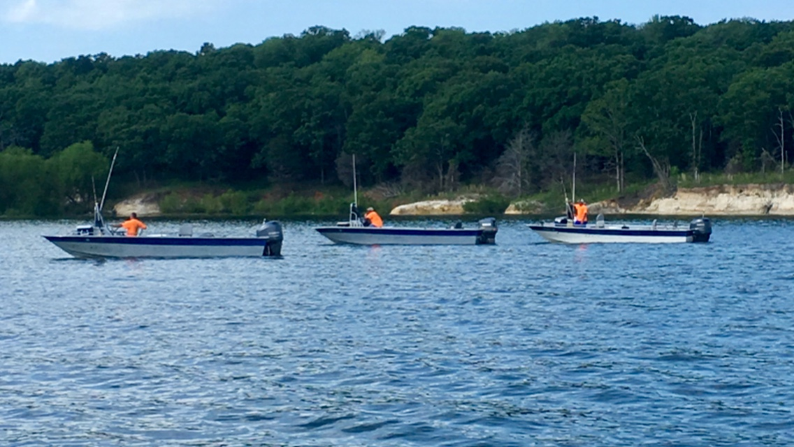
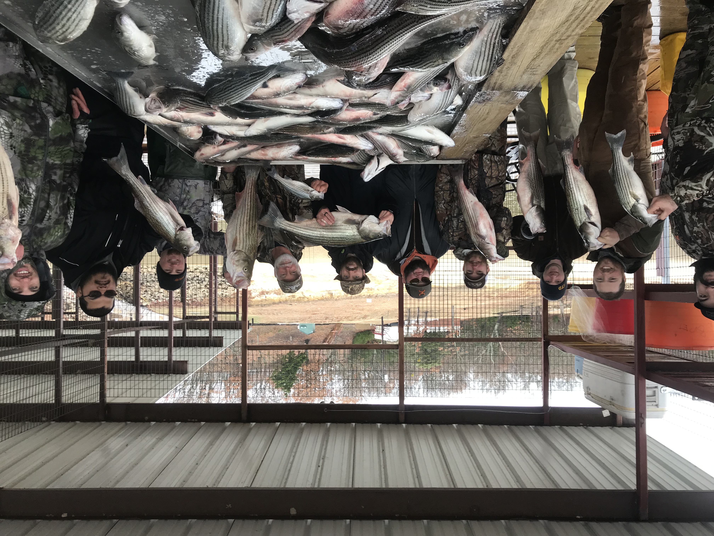
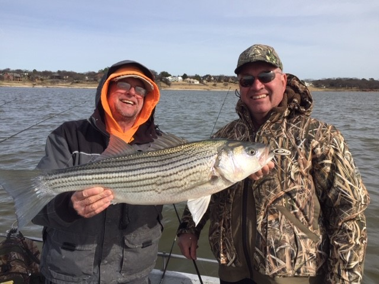

Lake Texoma
Premier inland striped bass fishery on the Texas–Oklahoma border.
Lake Texoma was built in 1944 for flood protection and hydroelectric power. Striped bass were introduced in 1965, and the lake has since produced stripers up to 35.2 lbs. The Red River below the dam has produced fish up to 43.1 lbs.
At 89,000 acres on the Red River, Texoma is widely recognized among Texas and Oklahoma lakes — with state parks, wildlife refuges, Corps parks, resorts, campgrounds, and golf nearby. Guides are plentiful here, but they are not all equal. Full-time professionals make the difference between just another day on the lake and a trip you remember.
Four Seasons provides professional full-time guides who specialize in fishing for the big fish. We guarantee fish and provide everything except a fishing license.

On the water
Guided striper trips from the boat to the cleaning table.


